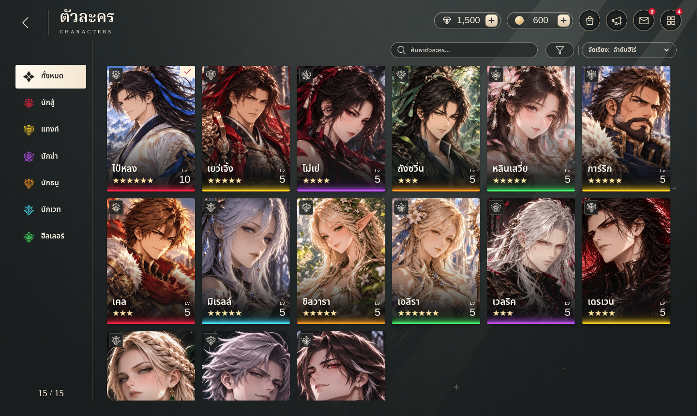
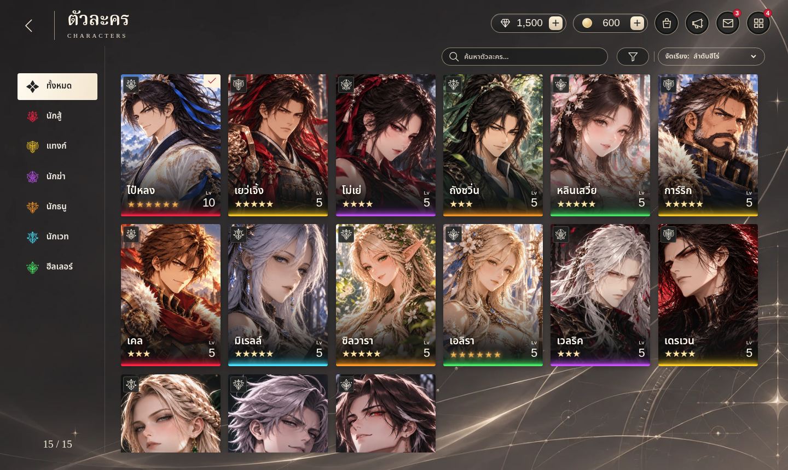
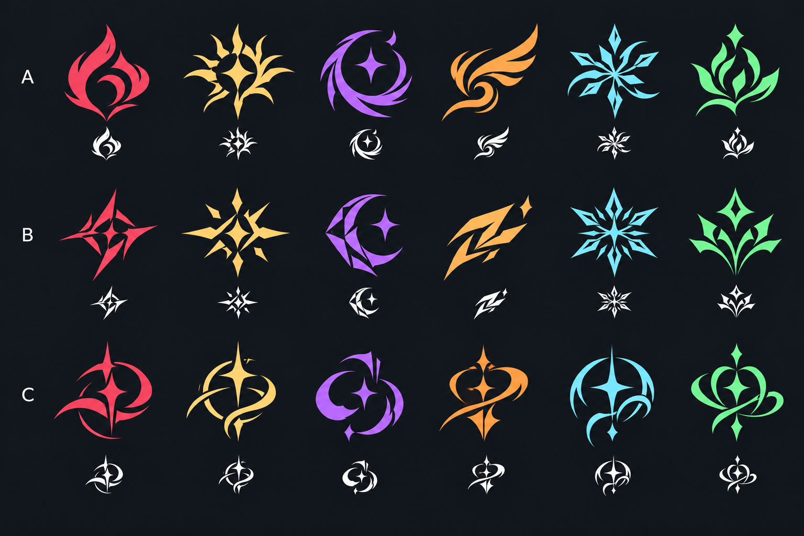

ภาพ actual ถ่ายจากเกมจริง ไม่รีทัช ใช้เซฟ QA แยกจากผู้เล่น กริด 6 ใบต่อแถว เมนูบนขนาดเดิม เครื่องมือและสเกลตัวรายการตามรอบก่อน


คลิป 6 วินาทีจากการเล่นแอนิเมชันปกติ ไม่ปรับจังหวะเพื่อถ่าย ใช้คอมโพเนนต์เดียวกับหน้ารายละเอียด ตรวจโหมดลดการเคลื่อนไหวแล้ว

ส่วนนี้เป็นภาพออกแบบจากการ gen ไม่ใช่ screenshot เกม · ชุดไอคอนในเกมยังเป็นชุดเดิมระหว่างเลือกแบบ · อิงเฉพาะ Ref 1 และ 2 ตามคำขอล่าสุด
Desktop เท่านั้น · ยังไม่ merge/deploy